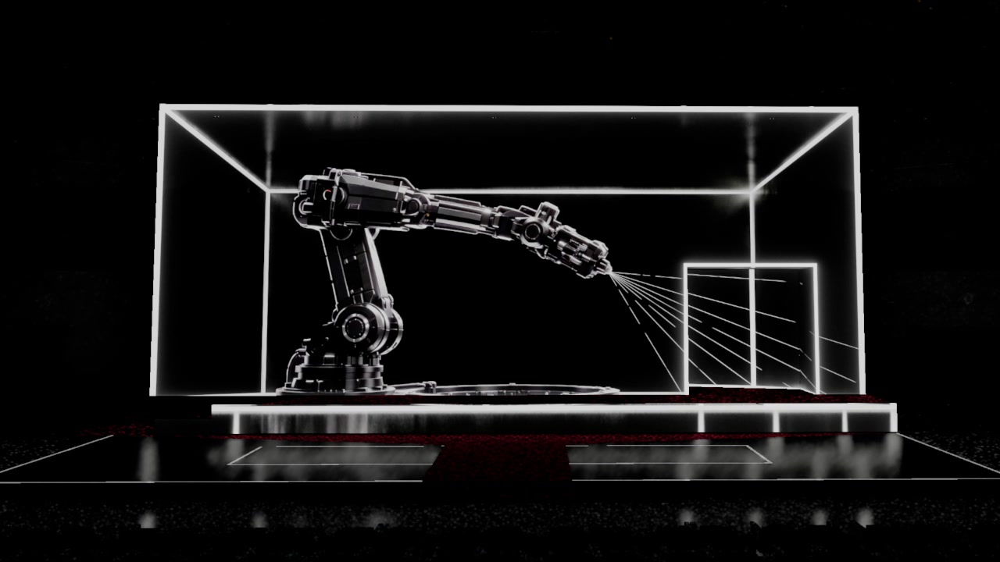
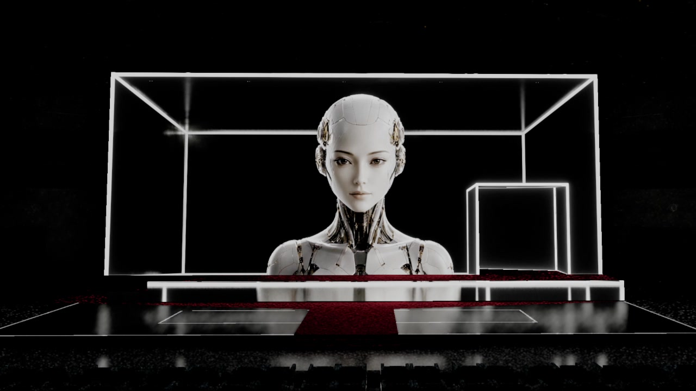
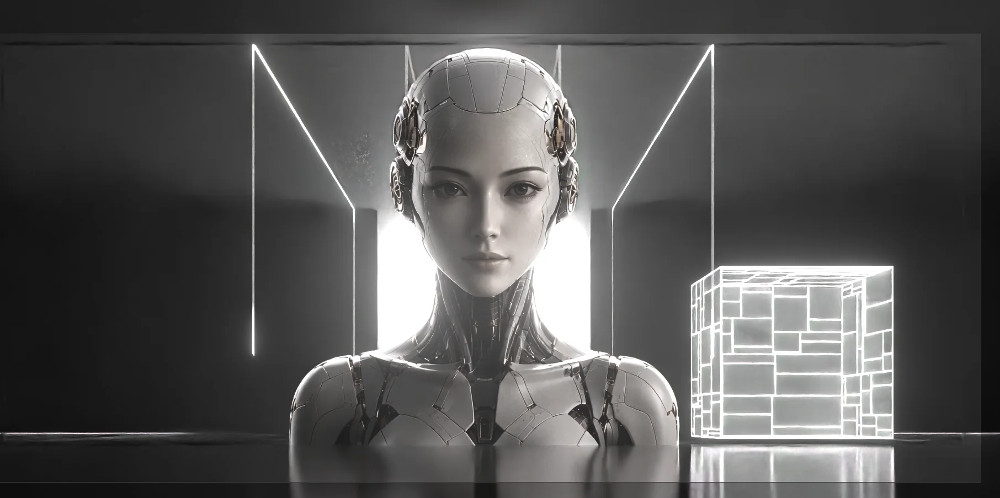

为 2026 中国·AI盛典开场秀制作大型舞台影像内容。项目以盒体屏幕为核心，围绕主观看位建立透视、结构映射与内容安全区，并将三维场景、机器人形象和 AI 影像整合到统一的播放系统中。Large-format stage content for the 2026 China AI Gala opening show. Built around a box-shaped LED set, the project aligned perspective, mapped geometry and safe zones to the primary audience view, then integrated 3D environments, a robotic figure and AI-generated imagery into one playback system.
现场画面呈现盒体舞台、裸眼三维透视、结构映射和最终演出效果。Selected frames show the box-shaped stage, glasses-free perspective, mapped geometry and final show presentation.





从舞台几何确定画面。Built from the stage geometry.
制作先在三维环境中复现舞台尺寸和主要观看角度，确定盒体透视、门洞位置及内容安全区。各段落随后按同一套映射标准完成镜头、画面衔接和输出测试，减少现场校准的不确定性。The stage dimensions and primary sightline were reconstructed in 3D before content production began. Perspective, the central opening and safe areas were locked first; every sequence then followed the same mapping standard through camera design, transitions and output tests, reducing uncertainty during on-site calibration.
- 项目Project
- 2026 中国·AI盛典「AI在一起」开场秀2026 China AI Gala — “AI Together” Opening Show
- 形式Format
- 大型活动开场秀 / 裸眼三维舞台影像Large-scale opening show / glasses-free 3D stage content
- VIRTURA 职责VIRTURA Role
- 空间映射、三维内容制作、AI 影像整合、舞台预演与播放文件交付Spatial mapping, 3D content production, AI-image integration, stage previsualisation and show-file delivery
- 公开记录Public Documentation
- 央视公开发布视频Public video released by CCTV